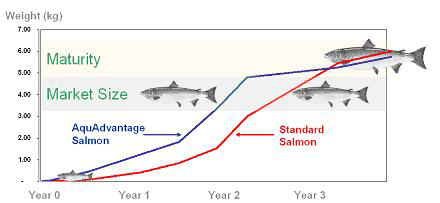

Aquaculture is a major part of the world’s current and future food supply. It is currently is the fastest growing food production sector in the world. GM fish are likely to dominate future fish farming by growing over two times faster than regular fish and being up to 30% more efficient with feed than regular fish.
Figure 1. Aqua Bounty grows 4–6 times faster as a juvenile than wild-type salmon. Source: Next Big Future
Fish farms operating in 2015 will be providing half of all available fish supplies. World total demand for fish and fishery products is projected to expand by almost 50 million tonnes, from 133 million tonnes in 1999/2001 to 183 million tonnes by 2015 (FAO). The FDA is clearing the way for genetically modified fish and animals to be supplied as food.
The FDA said genetically engineered animals, created for human use or consumption, will be regulated in the same way as veterinary drugs, i.e. they will go through a safety review process. Aqua Bounty of Massachusetts is hoping to market its genetically engineered salmon, which grows to maturity in less time than wild or farmed salmon, but it awaits approval. Aqua Bounty Technologies Inc. stated that genetically engineered salmon are safe to eat and unlikely to harm the environment. Aqua Bounty fish reach market size twice as fast and convert feed into body mass 10% – 30% more efficiently than traditional broodstock. So genetically modified fish could be given 2 kg of feed or less to produce 1 kg of meat.
The modified Atlantic salmon, known as AquAdvantage, are unlikely to escape into the ocean or reproduce with naturally occurring fish. In addition, Aqua Bounty has stipulated that they will market only sterile, all female advanced hybrid salmon. There can be no gene flow to wild salmon because sterile fish can not reproduce. Aqua Bounty fish reach market size twice as fast and convert feed into body mass 10% – 30% more efficiently than traditional broodstock. So genetically modified fish could be given 2 kg of feed or less to produce 1 kg of meat.